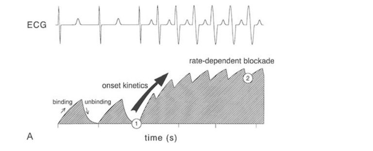
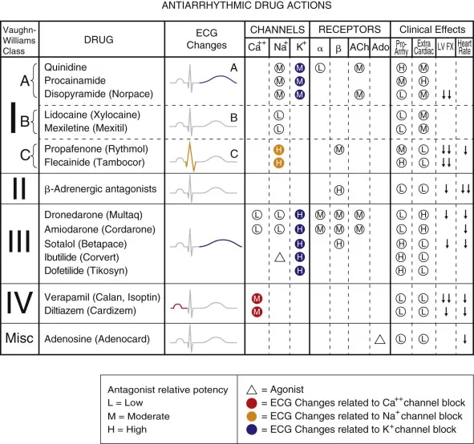

Antiarrhythmic drugs are classified by the Vaughan Williams system based on their primary mechanism of action. Each class has distinct effects on the ECG waveforms.
Class I agents primarily affect the QRS complex by slowing the rate of depolarization. Class Ic drugs, like flecainide, significantly prolong the QRS duration.

Class III agents, such as amiodarone and sotalol, block potassium channels, leading to a prolonged repolarization phase and QT interval prolongation.

Class IV agents (verapamil, diltiazem) slow conduction through the AV node, which typically manifests as an increase in the PR interval on the ECG.